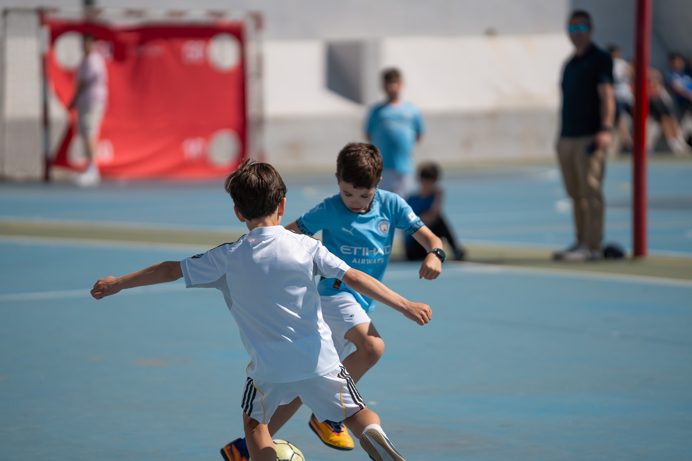
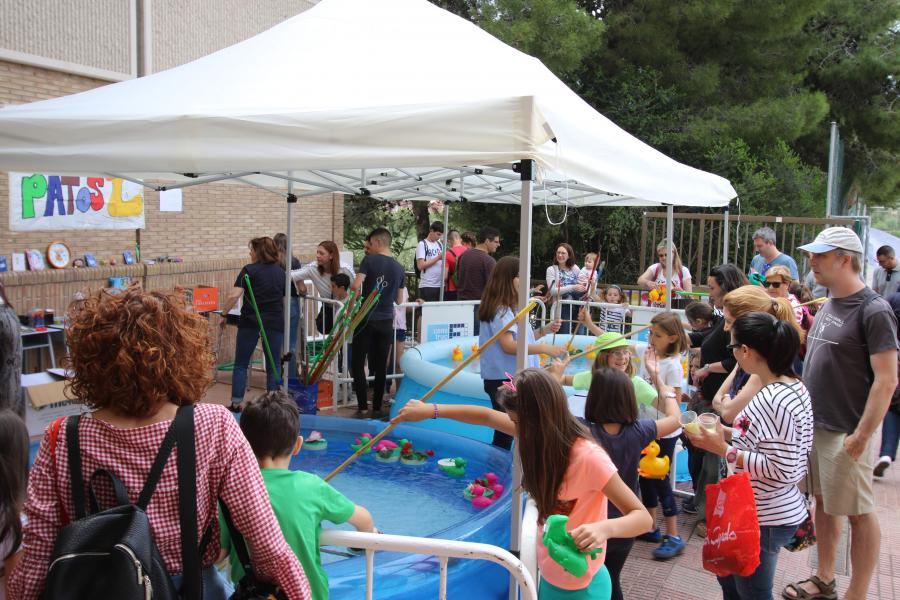
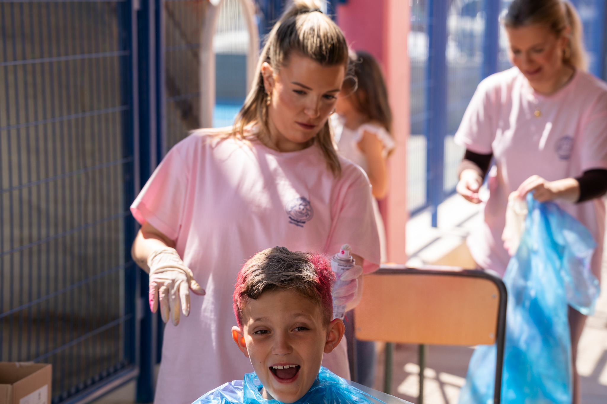

Certamen artístico diseñado para que los niños y niñas den rienda suelta a su imaginación mediante trazos y colores. Se valora la espontaneidad, la creatividad y la interpretación personal del tema propuesto, adaptando los criterios de valoración a su etapa de desarrollo (3 euros).

Variante del fútbol jugada en una pista dura y sin techar entre dos equipos de 5 jugadores cada uno, con un balón más pequeño y un ritmo de juego muy rápido (3 euros.

Juego ferial clásico y divertido donde los más pequeños utilizan una caña con gancho para capturar patos de plástico que flotan en el agua. Cada patito tiene un número en la base que corresponde a un premio seguro (3 ekis).

Espacios lúdicos y educativos diseñados especialmente para la primera infancia. Incluyen actividades guiadas como manualidades sencillas, modelado con plastilina, pintura de dedos y cuentacuentos para estimular su creatividad y motricidad (3 ekis).